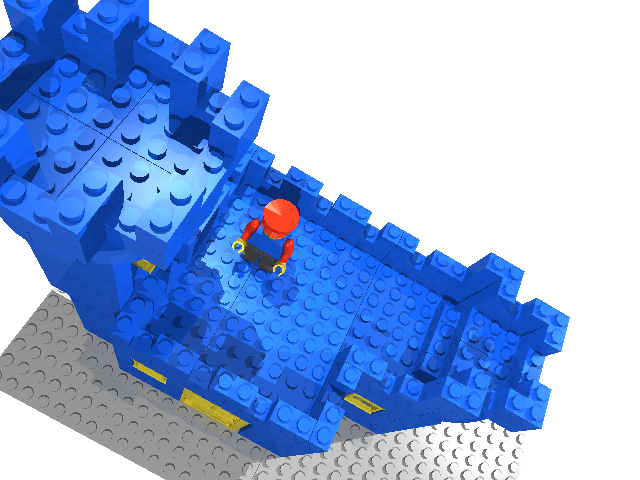

LdGLite to POV)
LDGLITE -v3 -l3 -J -s1.23457 -a0.864979,-0.269922,0.42302,0.498946,0.372797,-0.782351,0.0534718,0.887785,0.457138 castlerot.dat
camera {
#declare PCT = 0; // Percentage further away
#declare STEREO = 0; // Normal view
//#declare STEREO = degrees(atan2(1,12))/2; // Left view
//#declare STEREO = -degrees(atan2(1,12))/2; // Right view
location <-75.6439,-743.263,-319.586>
+PCT/100.0*<-43.3122,-719.106,-370.282>
sky <-0.404146,-0.301965,0.633704>
right -4/3*x
look_at <-32.3317,-24.1572,50.6963>
angle 60
rotate <0,1e-5,0> // Prevent gap between adjecent quads
//orthographic
}
l3p -cc-75.6439,-743.263,-319.586 -cla-32.3317,-24.1572,50.6963 -ca60 castlerot.dat -b15
Run the generated l3p command line. Then cut and paste the camera
settings into the POV file in place of the settings generated by l3p.
Run POV on it and there you go.
 Remember, pressing the j key makes ldglite display using an orthographic projection, and pressing the J key makes it use a perspective projection. For some reason the perspective view doesn't quite exactly match. I'm working on it. The orthographic projection lines up pretty well. Also the camera settings will match the ldglite screen, but the l3p command line currently only supports the perspective projection. POV and l3p lighting settings are not yet supported in ldglite, but I'm open to suggestions on how to this could be implemented. I try to keep up with comments posted at the Lugnet Cad Development newsgroup. |
||||